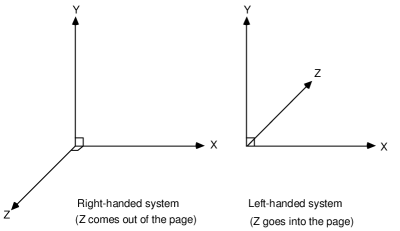

|
PURE API 0.4
PR00F's Ultimate Rendering Engine full documentation
|
|
PURE API 0.4
PR00F's Ultimate Rendering Engine full documentation
|
Main class of the engine is PR00FsReducedRenderingEngine. Initialization, shutdown, and access to other engine classes are done through this main class.
This page gives you a brief hint on the usage, but you can always check the UnitTests as well for different cases.
PURE uses the left-handed Cartesian coordinate system. This means the XZ plane is horizontal, the XY and and YZ planes are vertical, a positive X value means right, a positive Y value means up, and a positive Z value means forward.

image source: https://www.researchgate.net/figure/Right-and-Left-Handed-Coordinate-systems_fig1_2457107
PR00FsReducedRenderingEngine::initialize() is responsible for initialization.
The user can select which renderer should be initialized with the engine.
The detailed documentation of this function can be found at the initialize() member function of these renderers. The reason for this is that some renderer may not use a parameter or may use it in a different way than another renderer.
All renderers must implement the PRREIRenderer interface.
Currently the following renderers are available:
PR00FsReducedRenderingEngine initializes one of the above renderers at initialization.
Example code snippet for initializing the engine, with PRRERendererHWfixedPipe renderer, with a 800x600 pixels window and 24 bpp Z-buffer:
Related PURE API: PR00FsReducedRenderingEngine::initialize(), PRREIRenderer::initialize().
Resources such as textures, 3D models, etc. can be created or loaded by Managers.
Any class derived from PRREManager is a manager.
Following resource-specific Managers are available:
Note that Managers are only available when the engine is initialized.
Managers can be accessed by the relevant get...() member functions of main class PR00FsReducedRenderingEngine.
Example code snippet for creating a texture from an image file:
Example code snippet for creating a renderable object from a 3D mesh file:
Related PURE API: TODO
As mentioned at the Initialization section above, there are multiple renderers available. The initialized renderer object can be accessed with PR00FsReducedRenderingEngine::getRenderer().
Rendering can be executed with the PRREIRenderer::RenderScene() implementation of the initialized renderer object.
Example code snippet for rendering:
Related PURE API: PR00FsReducedRenderingEngine::getRenderer(), PRREIRenderer::RenderScene().
Graceful termination of the client application can be a reason for shutting down the graphics engine.
Another reason could be the need for changing some basic renderer setting that can be specified only in PR00FsReducedRenderingEngine::initialize().
In any case, PR00FsReducedRenderingEngine::shutdown() should be called that also invokes the PRREIRenderer::shutdown() implementation of the current renderer.
You don't need to take care of any previously loaded resources since the engine makes sure that all managers do their cleanup routine as well.
Note that an uninitialized engine cannot be shut down. First you need to initialize the engine to shut it down.
I know this sounds weird, but sometimes it is not straightforward. :)
Example code snippet for shutdown:
Related PURE API: PR00FsReducedRenderingEngine::shutdown(), PRREIRenderer::shutdown().
TODO